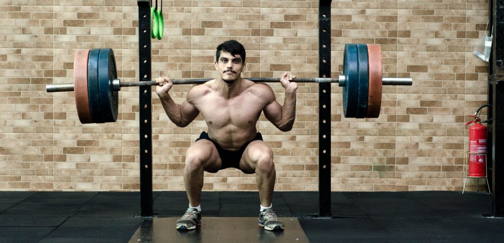
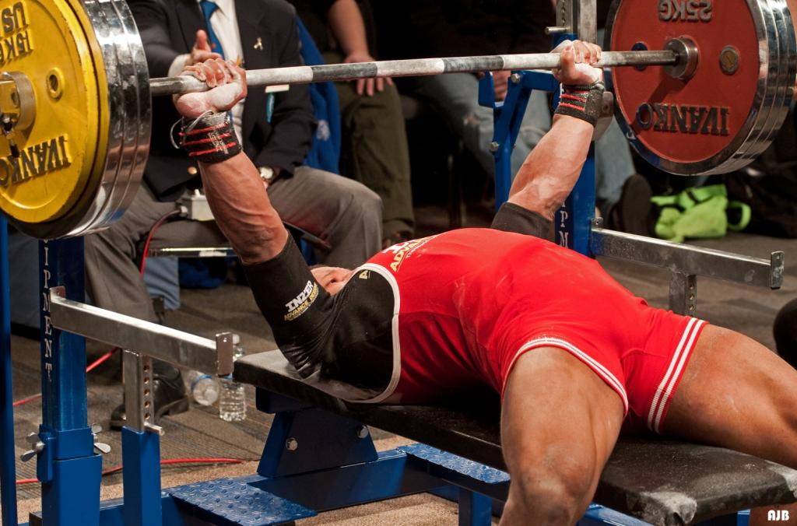
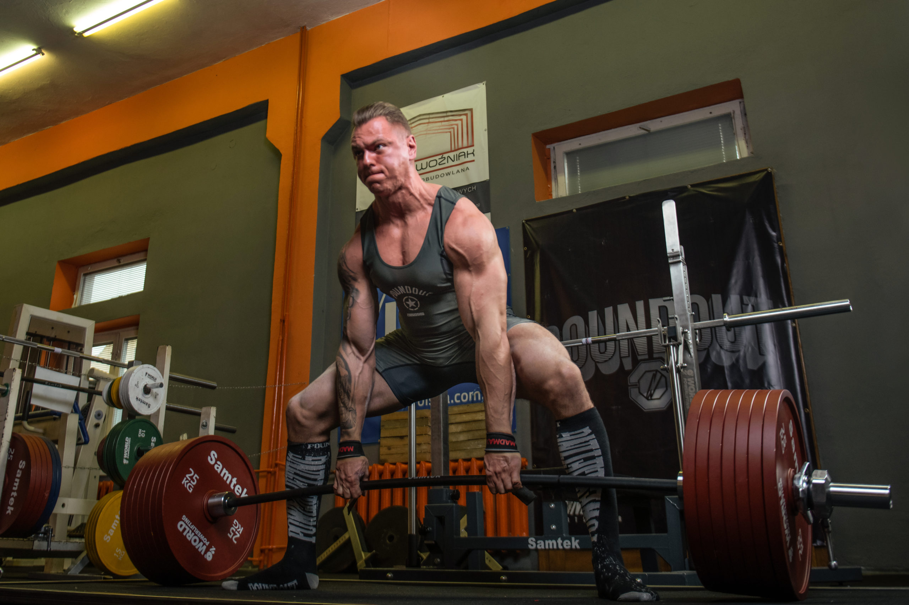

Dyscypliny
Przysiad ze sztangą
Podczas trójboju siłowego, ćwiczenie to wykonywane jest zazwyczaj w wersji „low bar”. W tym wariancie sztanga spoczywa na linii wzdłuż grzebienia łopatek. Jest to ustawienie, umożliwiające osiągnięcie najskuteczniejszego wyniku.
Wyciskanie leżąc
Czyli wyciskanie na ławce poziomej. Zawodnik kładzie się na ławeczce tak, aby głowa, barki i pośladki do niej przylegały. Stopy powinny pozostać w kontakcie z blokami lub pomostem. Po otrzymaniu sygnału rozpoczęcia ćwiczenia, zawodnik opuszcza sztangę do klatki piersiowej i przytrzymuje ją w tej pozycji przez określony czas. Następnie wykonuje wyciskanie do wyprostu ramion.
Martwy ciąg
Martwy ciąg w trójboju siłowy wykonywać można dowolnym chwytem. Na zakończenie boju nogi muszą pozostać wyprostowane w kolanach, a barki odciągnięte do tyłu. Każde oderwanie sztangi od podłoża jest traktowane jako jedno podejście, nawet jeżeli nie dojdzie do wyprostu ciała.
